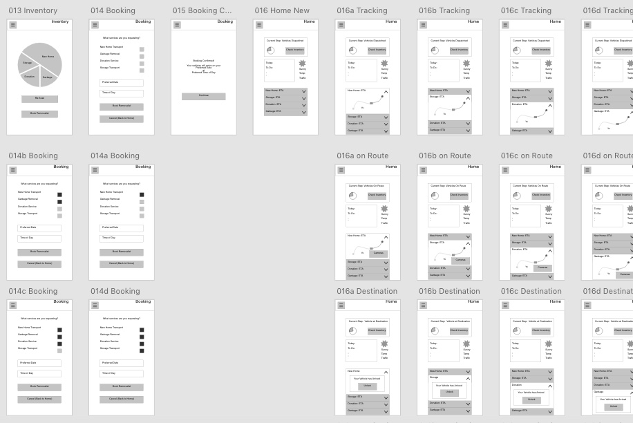

This stage involved creating a developing ideas and iterating them based on feedback from user evaluation sessions. These ideas were created using paper prototypes. This cycle repeated in order to design a more polished concept.


5. High Fidelity Mockups
The final design stage involved turning the paper prototype into wireframes using sketch and InVision. The final design was created using Adobe XDCC. At each stage the prototype was tested and improved upon.
